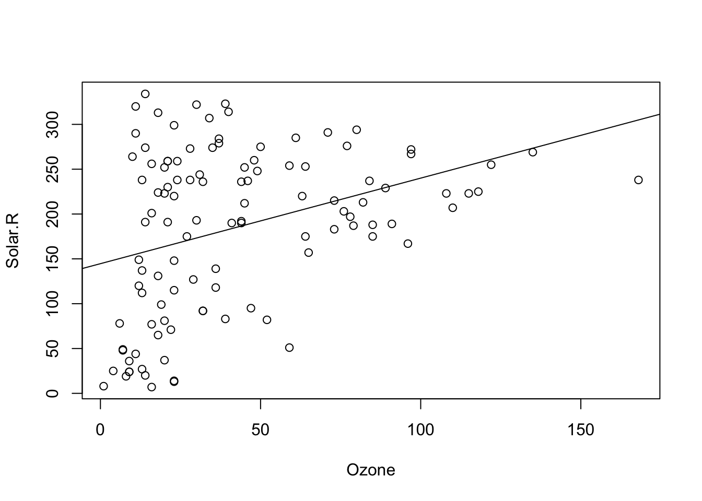

# Definindo a semente para reprodutibilidade
set.seed(1)
# Gerando os dados distribuidos de forma normal
dados <- rnorm(100)
# Gráfico Q-Q plot
qqnorm(dados) # Gráfico Q-Q plot
qqline(dados) # Adiciona a linha de referência14 Análises Estatísticas
A análise estatística dos dados é uma etapa fundamental em qualquer pesquisa científica. A estatística é uma ferramenta que permite a interpretação dos dados, a identificação de padrões e a tomada de decisões.
Inicialmente vamos apresentar como avaliar a normalidade de um conjunto de dados, etapa fundamental para a escolha da técnica estatística a ser utilizada. Em seguida, vamos apresentar a análise de correlação, que permite avaliar a relação entre duas variáveis. Em seguida, vamos apresentar o teste t de Student, que permite avaliar a diferença entre as médias de dois grupos. Em seguida, vamos apresentar a análise de variância (ANOVA), que permite avaliar a diferença entre as médias de três ou mais grupos. Em seguida, vamos apresentar o teste de Wilcoxon, que permite avaliar a diferença entre as medianas de dois grupos. Em seguida, vamos apresentar o teste do qui-quadrado e o teste exato de Fisher, que permitem avaliar a associação entre duas variáveis categóricas. Por fim, vamos apresentar a análise de regressão, que permite avaliar a relação entre uma variável dependente e uma ou mais variáveis independentes.
14.1 Testes de Normalidade
A normalidade dos dados é uma das premissas dos testes estatísticos paramétricos. A normalidade dos dados pode ser avaliada visualmente através de gráficos de densidade e de histograma, através de gráficos como o QQ plot (quantile–quantile plot), ou através de testes estatísticos. Neste capítulo vamos apresentar como fazer os gráficos Q-Q plot e como implementar no R os testes de normalidade de Shapiro-Wilk e Kolmogorov-Smirnov.
14.1.1 QQ plot
Um QQ plot, abreviação de “quantile-quantile plot”, é geralmente usado para avaliar se um conjunto de dados segue ou não uma distribuição normal. Um QQ plot é um gráfico de dispersão (scatter plot) criado plotando dois conjuntos de quantis um contra o outro. Os gráficos QQ classificam os dados da amostra em ordem crescente e, em seguida, plotam esses pontos contra quantis calculados a partir de uma distribuição teórica. Embora os gráficos QQ normais sejam os mais usados na prática devido a tantos métodos estatísticos que assumem normalidade, os gráficos QQ podem ser usados para qualquer distribuição. Se ambos os conjuntos de quantis vieram da mesma distribuição, devemos ver os pontos formando uma linha que é aproximadamente reta.
Num gráfico QQ plot normal os pontos fornecem uma indicação da normalidade do conjunto de dados. Se os dados forem normalmente distribuídos, os pontos cairão na linha de diagonal de 45 graus. Por outro lado, quanto mais os pontos se desviam dessa diagonal, menor a probabilidade de o conjunto de dados seguir uma distribuição normal.
O código abaixo mostra como fazer um gráfico Q-Q plot no R. Primeiro, geramos um conjunto de dados que segue uma distribuição normal e, em seguida, fazemos o gráfico QQ plot normal. Observe como os pontos se aproximam da linha de referência.
Vamos criar agora um conjunto de dados que não segue uma distribuição normal e fazer o gráfico Q-Q plot. Veja como os pontos se desviam da linha de referência.
# Definindo a semente para reprodutibilidade
set.seed(1)
# Gerando os dados distribuidos de forma não normal
dados_nao_normais <- rexp(100, rate = 1)
# Gráfico Q-Q plot
qqnorm(dados_nao_normais) # Gráfico Q-Q plot
qqline(dados_nao_normais) # Adiciona a linha de referência
14.1.2 Teste de Shapiro-Wilk
O teste de Shapiro-Wilk é um teste estatístico utilizado para avaliar a normalidade dos dados. A hipótese nula do teste é que os dados seguem uma distribuição normal. Ou sejam, se o valor-p do teste for menor que o nível de significância, a hipótese nula é rejeitada, indicando que os dados não seguem uma distribuição normal. Por outro lado, se o valor-p for maior que o nível de significância, a hipótese nula não é rejeitada, indicando que os dados seguem uma distribuição normal.
O argumento principal do teste de Shapiro-Wilk é o conjunto de dados que queremos testar. O resultado do teste é a estatística \(W\) e o valor-p. \(W\) indica o quão bem os dados se ajustam a uma distribuição normal. O valor \(W\) próximo a 1 indica que os dados provavelmente serão distribuídos normalmente, enquanto um valor significativamente menor que 1 sugere afastamento da normalidade. O valor-p é a probabilidade de obter um valor de W tão extremo quanto o observado, sob a hipótese nula de que os dados seguem uma distribuição normal.
O código abaixo mostra como implementar o teste de Shapiro-Wilk no R. Primeiro, geramos um conjunto de dados que segue uma distribuição normal e, em seguida, fazemos o teste de Shapiro-Wilk. Como já sabemos que nossos dados tem uma distribuição normal, o valor-p desse teste deve ser maior que o nível de significância.
# Definindo a semente para reprodutibilidade
set.seed(1)
# Gerando os dados distribuidos de forma normal
dados <- rnorm(100)
# Teste de Shapiro-Wilk
shapiro.test(dados)
Shapiro-Wilk normality test
data: dados
W = 0.9956, p-value = 0.9876Observe que o valor-p foi realmente maior que o nível de significância, indicando que os dados seguem uma distribuição normal.
Vamos criar agora um conjunto de dados que não segue uma distribuição normal e fazer o teste de Shapiro-Wilk. Observe que o valor-p desse teste deve ser menor que o nível de significância.
# Definindo a semente para reprodutibilidade
set.seed(1)
# Gerando os dados distribuidos de forma não normal
dados_nao_normais <- rexp(100, rate = 1)
# Teste de Shapiro-Wilk
# note que o valor de p do teste de shapiro é mostrado em notação científica
shapiro.test(dados_nao_normais)
Shapiro-Wilk normality test
data: dados_nao_normais
W = 0.82218, p-value = 1.263e-09# extraindo o valor de p do teste de shapiro
pvalue=shapiro.test(dados_nao_normais)$p.value
# Imprimindo o valor de p por extenso
print(paste("p-value =", format(pvalue, scientific = FALSE)))[1] "p-value = 0.000000001262599"Como previsto, o valor-p foi menor que o nível de significância, indicando que os dados não seguem uma distribuição normal.
14.1.3 Teste de Kolmogorov-Smirnov
O teste de Kolmogorov-Smirnov é um outro teste estatístico utilizado para avaliar a normalidade dos dados. Da mesma forma que o teste de Shapiro-Wilki, a hipótese nula do teste de de Kolmogorov-Smirnov é que os dados seguem uma distribuição normal. Ou sejam, se o valor-p do teste for menor que o nível de significância, a hipótese nula é rejeitada, indicando que os dados não seguem uma distribuição normal. Por outro lado, se o valor-p for maior que o nível de significância, a hipótese nula não é rejeitada, indicando que os dados seguem uma distribuição normal.
O teste te Kolmorov-Smirnov também pode ser usado para testar se os dados vem de outras distribuições, pois o teste na verdade verifica se duas distribuições são iguais, ou seja, se uma amostra vem de uma distribuição em particular. Quando desejamos saber se a amostra tem uma distribuiçao normal, o teste de Kolmogorov-Smirnov compara a distribuição empírica dos dados com a distribuição teórica normal.
O argumento principal do teste de Kolmogorov-Smirnov também é o conjunto de dados que queremos testar. Mas também precisamos especificar a distribuição teórica que queremos testar. No nosso caso isso será feito com a string “pnorm”, que indica que queremos testar se os dados seguem uma distribuição normal. Além disso precisamos também especificar os parâmetros da distribuição teórica, que no caso da distribuição normal são a média e o desvio padrão. O mais indicado é usar a média e o desvio padrão dos dados, como fizemos no exemplo abaixo.
O resultado do teste é a estatística \(D\) e o valor-p. \(D\) é a maior diferença entre a função de distribuição acumulada empírica dos dados e a função de distribuição acumulada teórica. O valor-p é a probabilidade de obter um valor de \(D\) tão extremo quanto o observado, sob a hipótese nula de que os dados seguem uma distribuição normal.
O código abaixo mostra como implementar o teste de Kolmogorov-Smirnov no R. Primeiro, geramos um conjunto de dados que segue uma distribuição normal e, em seguida, fazemos o teste de Kolmogorov-Smirnov. Como já sabemos que nossos dados tem uma distribuição normal, o valor-p desse teste deve ser maior que o nível de significância.
# Definindo a semente para reprodutibilidade
set.seed(1)
# Gerando os dados distribuidos de forma normal
dados <- rnorm(100)
# Teste de Kolmogorov-Smirnov
ks.test(dados, "pnorm", mean = mean(dados), sd = sd(dados))
Asymptotic one-sample Kolmogorov-Smirnov test
data: dados
D = 0.047014, p-value = 0.9799
alternative hypothesis: two-sidedObserve que o valor de p foi realmente maior que o nível de significância, indicando que os dados seguem uma distribuição normal.
Vamos criar agora um conjunto de dados que não segue uma distribuição normal e fazer o teste de Kolmogorov-Smirnov. Observe que o valor-p desse teste deve ser menor que o nível de significância.
# Definindo a semente para reprodutibilidade
set.seed(1)
# Gerando os dados distribuidos de forma não normal
dados_nao_normais <- rexp(100, rate = 1)
# Teste de Kolmogorov-Smirnov
ks.test(dados_nao_normais, "pnorm", mean = mean(dados_nao_normais), sd = sd(dados_nao_normais))
Asymptotic one-sample Kolmogorov-Smirnov test
data: dados_nao_normais
D = 0.15964, p-value = 0.01223
alternative hypothesis: two-sidedObserve que o valor-p foi menor que o nível de significância, indicando que os dados não seguem uma distribuição normal.
14.2 Correlação Linear
Frequentemente precisamos calcular numericamente a força e a direção da correlação entre duas variáveis. A medida estatística mais comum para mensurar a força e a direção da correlação entre duas variáveis numéricas é o Coeficiente de Correlação Linear de Pearson - denotado por r. Vale ressaltar que esse coeficiente só serve para analisar correlações lineares.
14.2.1 cor() e cor.test()
A linguagem R tem uma função específica para calcular o coeficiente de correlação linear de Pearson (r) entre duas variáveis numéricas: a função cor(). Para usar essa função basta inserir como argumentos as duas variáveis numéricas para as quais se deseja calcular o coeficiente. A ordem em que as variáveis são inseridas não faz diferença nesse cálculo.
Vamos testar essas funções no dataset mpg que já foi discutido em capítulos anteriores (Chapter 10). O código abaixo calcula o coeficiente de correlação linear de Pearson entre as cilindradas (displ) e o número de milhas percorridas com um galão na cidade (cty). A ordem da inserção desses argumentos não importa.
library(ggplot2) # necessário para usar o dataset mpg
cor(mpg$displ, mpg$cty)[1] -0.798524cor(mpg$cty,mpg$displ)[1] -0.798524O valor encontrado cor(mpg$cty,mpg$displ) indica que essa é uma correlação negativa e forte. A mensagem é clara, quanto maior as cilindradas, menor a distância percorrida com 1 galão de gasolina, ou seja, carros 1.0 são mais econômicos mesmo.
O valor coeficiente de determinação \(r^2\) pode ser obtido elevando-se a função cor() ao quadrado.
r2 <- cor(mpg$displ, mpg$cty)^2
r2[1] 0.6376405O intervalo de confiança e o valor de p associado ao coeficiente de correlação podem ser obtidos com a função cor.test().
cor.test(mpg$cty,mpg$displ)
Pearson's product-moment correlation
data: mpg$cty and mpg$displ
t = -20.205, df = 232, p-value < 2.2e-16
alternative hypothesis: true correlation is not equal to 0
95 percent confidence interval:
-0.8406782 -0.7467508
sample estimates:
cor
-0.798524 Frequentemente existem valores NA no conjunto de dados. Nesses casos a função cor() não conseguirá computar o valor do coeficiente de correlação, pois, por padrão, essa função só faz os cálculos se todos os pares de dados estiverem completos. Para calcular a correlação omitindo os pares incompletos é necessário ajustar o parâmetro use =, incluindo use = complete.obs.
Para ilustrar essa situação, usaremos o dataset airquality do R, que contém dados NA em algumas de suas medições. Esse dataset contém dados de medições diárias da qualidade do ar em Nova Iorque de maio a setembro de 1973. São cerca de 154 observações e 6 variáveis numéricas: - Ozone (quantidade de ozônio)
- Solar.R (radiação solar)
- Wind (velocidade do vento)
- Temp (temperatura - F)
- Month (mês) - Day (dia)
Podemos verificar a existência de valores NA com o comando summary()
summary(airquality) Ozone Solar.R Wind Temp
Min. : 1.00 Min. : 7.0 Min. : 1.700 Min. :56.00
1st Qu.: 18.00 1st Qu.:115.8 1st Qu.: 7.400 1st Qu.:72.00
Median : 31.50 Median :205.0 Median : 9.700 Median :79.00
Mean : 42.13 Mean :185.9 Mean : 9.958 Mean :77.88
3rd Qu.: 63.25 3rd Qu.:258.8 3rd Qu.:11.500 3rd Qu.:85.00
Max. :168.00 Max. :334.0 Max. :20.700 Max. :97.00
NA's :37 NA's :7
Month Day
Min. :5.000 Min. : 1.0
1st Qu.:6.000 1st Qu.: 8.0
Median :7.000 Median :16.0
Mean :6.993 Mean :15.8
3rd Qu.:8.000 3rd Qu.:23.0
Max. :9.000 Max. :31.0
Devido as valores NA nas variáveis Ozone e Solar.R, a função cor() não calcula o coeficiente de correlação:
cor(airquality$Ozone, airquality$Solar.R)[1] NAPara obter o resultado desejado, precisamos incluir o argumento use = "complete.obs"
cor(airquality$Ozone, airquality$Solar.R, use = "complete.obs")[1] 0.3483417A inclusão desse argumento faz com que a função cor() exclua dos cálculos os valores NA. O mesmo resultado pode ser obtido se excluirmos esses valores antes de usar a função.
Para demonstrar isso, vamos excluir esses valores com a função drop_na()do pacote tidyr, parte do tidyverse. Criaremos um novo data frame com o nome air2.
library(tidyr)
air2 <- airquality |>
drop_na()
cor(air2$Ozone, air2$Solar.R)[1] 0.3483417A função cor.test() já faz essa exclusão dos dados NA por padrão, não sendo necessária sua exclusão nem o uso do argumento use = "complete.obs".
cor.test(airquality$Ozone, airquality$Solar.R)
Pearson's product-moment correlation
data: airquality$Ozone and airquality$Solar.R
t = 3.8798, df = 109, p-value = 0.0001793
alternative hypothesis: true correlation is not equal to 0
95 percent confidence interval:
0.173194 0.502132
sample estimates:
cor
0.3483417 14.2.2 pairs() e ggpairs()
Podemos usar a função pairs() para visualizar rapidamente todas as correlações entre as variáveis de um dataset. Vamos testar essa função no dataset iris do ggplot.
Este conjunto de dados fornece as medidas em centímetros das variáveis comprimento e largura da sépala e comprimento e largura da pétala, respectivamente, para 50 flores de cada uma das 3 espécies de íris. As espécies são Iris setosa, versicolor e virginica.
pairs(iris)
O pacote GGally possui uma função similar à função pairs() do R, mas com muito mais funcionalidades. Para usá-la, é necessário instalar o pacote GGally através do comando install.packages("GGally") no console.
library(GGally)ggpairs(iris)Podemos também pedir à função ggpairs() que use cores diferentes para cada espécie.
ggpairs(iris, mapping = aes(color = Species))
Podemos obter o mesmo resultado usando o operador pipe:
iris |>
ggpairs(aes(color = Species))14.2.3 Scatter plot (gráficos de dispersão)
A forma mais simples de visualizar a correlação entre duas variáveis é através de um gráfico de scatter plot. Essa relação pode ser mostrada de forma ainda mais explícita quando inserimos no gráfico uma reta que representa a correlação linear entre essas variáveis. Essa reta, chamada de reta de regressão linear, representa o modelo matemático de correlação entre essas duas variáveis.
A função básica do R para criar um scatterplot e simplesmente plot() e a inserção da linha de regressão é feita com a função abline() e lm(), de linear model. Vejamos como plotar um gráfico de correlação entre os níveis de ozônio e a radiação solar com esses comandos, usando o dataset airquality do R.
plot(Solar.R ~ Ozone, data = airquality)
abline(lm(Solar.R ~ Ozone, data = airquality))
Apesar dos comandos do R base serem simples, não são nada elegantes. Os gráficos com o ggplot são muito mais profissionais e bem mais flexíveis para ajustes dos detalhes. Vamos plotar esse mesmo gráfico com o ggplot, usando o geom_point() para plotar o scatter plot.
ggplot(airquality) +
geom_point(aes(x=Ozone, y=Solar.R)) Warning: Removed 42 rows containing missing values or values outside the scale range
(`geom_point()`).Para plotar a reta de regressão basta incluir uma nova camada, uma nova geometria, nesse caso geom_smooth(), indicando como argumentos os mesmos dados e o método linear model lm.
ggplot(airquality) +
geom_point(aes(x=Ozone, y=Solar.R)) +
geom_smooth(aes(x=Ozone, y=Solar.R), method = lm)`geom_smooth()` using formula = 'y ~ x'Warning: Removed 42 rows containing non-finite outside the scale range
(`stat_smooth()`).Warning: Removed 42 rows containing missing values or values outside the scale range
(`geom_point()`).Observe entretanto que o código acima repete duas vezes a expressão aes(x=Solar.R, y=Ozone). Podemos reduzir esse código, inserindo essa expressão na primeira linha, o que deixa o código mais limpo, como feito abaixo:
ggplot(airquality, aes(x=Ozone, y=Solar.R)) +
geom_point() +
geom_smooth(method = lm)
O ggplot tem também inúmeras outras possibilidades de ajustes. No código a seguir irei inserir um título, subtítulo, nota de rodapé, mudar os nomes dos eixos e usar um tema pré-definido para estilização do gráfico.
ggplot(airquality, aes(x=Ozone, y=Solar.R)) +
geom_point() +
geom_smooth(method = lm) +
labs(title = "Correlação entre níveis de Ozônio e Radiaçao solar",
subtitle = "Nova Iorque de maio a setembro de 1973",
caption = "fonte: dataset airquality") +
ylab("Radiação Solar") +
xlab("Niveis de Ozônio") +
theme_classic()14.3 Teste t de Student
O test t de Student foi criado em 1908 por William Sealy Gosset (Student 1908), matemático e estatístico que trabalhava na cervejaria Guinness, em Dublin, na Irlanda. A Guinness considerava de grande importância recrutar os melhores graduados de Oxford e Cambridge para os cargos de bioquímico e estatístico de testes de sua cerveja para monitorar a qualidade da bebida. O teste t, desenvolvido por Gosset, para monitorar a qualidade da cerveja tipo stout tinha como grande diferencial o fato de poder ser aplicado em amostras de pequeno tamanho pequeno, permitindo fazer inferências com um menor número de elementos, reduzindo os custos da pesquisa.
A importância dada ao departamento científico da Guinness era tamanha que o uso de métodos estatísticos na fabricação da cerveja era considerado um segredo industrial. Alguns autores argumentam que foi esse o motivo pelo qual Gosset publicou o artigo sobre o teste t em 1908 sob o pseudônimo “Student” e o teste t passou a ser conhecido como teste t de Student.
O teste t de Student (ou simplesmente teste t) compara as médias de dois conjuntos numéricos e avalia se as diferenças entre essas médias são significativas. Quando existem mais de 3 grupos o test t não pode ser usado e nesse caso podemos usar o Anova, discutido no capítulo seguinte.
A necessidade de determinar se duas médias de amostras são diferentes entre si é uma situação extremamente frequente em pesquisas científicas. Por exemplo se um grupo experimental difere de um grupo controle, se uma amostra difere da população, se um grupo difere antes de depois de um procedimento. Nessas diversas situações, um método bastante comum é a comparação das médias da medida de interesse. Por exemplo, a média de peso de dois grupos submetidos a diferentes dietas.
14.3.1 Os 3 tipos de teste t de Student
Existem 3 tipos comuns de teste t:
- Teste t para duas amostras independentes (ou não pareadas), para comparar as médias de duas amostras independentes.
- Teste t para duas amostras dependentes (ou pareadas), para comparar as médias de duas amostras pareadas.
- Teste t para uma amostra, para comparar a média de uma amostra com a média de uma população.
14.3.1.1 Teste t para amostras independentes
O Teste t para amostras independentes é o teste padrão, ou default do test t do R.
O R tem uma função muito simples de usar para realizar o teste t: t.test(). Para usar essa função basta incluir como argumentos os valores obtidos de cada grupo da pesquisa e essa função do R já calcula a média de cada grupo e faz a comparação estatística.
Veja o exemplo a seguir, no qual existem dois grupos diferentes de pacientes (controle e experimental), com os valores de uma medida fictícia. Vamos primeiro criar dois conjuntos de dados numéricos, representando os valores individuais de alguma medida de um Ensaio Clínico Randomizado.
# criando os vetores com os dados:
controle <- c(21, 28, 24, 23, 23, 19, 28, 20, 22, 20, 26, 26)
experimental <- c(26, 27, 23, 25, 25, 29, 30, 31, 36, 23, 32, 22)
# criando uma tibble para armazenar os vetores.
result <- tibble(controle, experimental)
result# A tibble: 12 × 2
controle experimental
<dbl> <dbl>
1 21 26
2 28 27
3 24 23
4 23 25
5 23 25
6 19 29
7 28 30
8 20 31
9 22 36
10 20 23
11 26 32
12 26 22Muitas vezes antes de algumas análises, teremos de fazer uma transformação em nosso data frame (ou tibble), transformando o data frame do tipo wide em long como explicado no capítulo do pacote tidyr @ref(tidyr).
# carregando o pacote tidyr
library(tidyr)
# criando um data frame do tipo long
result.long <- pivot_longer(data = result,
cols = c("controle", "experimental"),
names_to = "grupo",
values_to = "scores")
result.long# A tibble: 24 × 2
grupo scores
<chr> <dbl>
1 controle 21
2 experimental 26
3 controle 28
4 experimental 27
5 controle 24
6 experimental 23
7 controle 23
8 experimental 25
9 controle 23
10 experimental 25
# ℹ 14 more rowsUm gráfico de boxplot pode nos mostrar que o grupo experimental tem uma média maior.
ggplot(result.long) +
geom_boxplot(aes(x=grupo, y=scores, fill=grupo)) +
theme_classic()Mas um gráfico não é suficiente.
Para comparar a média de cada um desses dois grupos, usamos a função t.test() como mostrado a seguir. Podemos fazer o test t de várias formas.
- Podemos usar os vetores numéricos comom argumentos.
- Podemos usar o data frame wide (ou tibble), selecionando as colunas como argumentos usando o operador
$.
- podemos usar o data frame (ou tibble) no formato long.
1. Teste t com vetores numéricos
# Teste t de Student para amostras independentes, padrão do R
# usando os vetores com os dados como argumentos.
t.test(controle, experimental)
Welch Two Sample t-test
data: controle and experimental
t = -2.6837, df = 20.163, p-value = 0.01421
alternative hypothesis: true difference in means is not equal to 0
95 percent confidence interval:
-7.2555305 -0.9111362
sample estimates:
mean of x mean of y
23.33333 27.41667 2. Teste t com data frame wide
Se o data frame com os dados está no formaro wide (tidy format), ou seja, se há uma coluna para cada amostra, para realizar o test t, basta usar o operador $ para acessar as variáveis do data frame a serem comparadas.
t.test(result$controle, result$experimental)
Welch Two Sample t-test
data: result$controle and result$experimental
t = -2.6837, df = 20.163, p-value = 0.01421
alternative hypothesis: true difference in means is not equal to 0
95 percent confidence interval:
-7.2555305 -0.9111362
sample estimates:
mean of x mean of y
23.33333 27.41667 Podemos também informar o dataset primeiro e depois incluir os nomes das colunas/variáveis.
t.test(data=result, controle,experimental)
Welch Two Sample t-test
data: controle and experimental
t = -2.6837, df = 20.163, p-value = 0.01421
alternative hypothesis: true difference in means is not equal to 0
95 percent confidence interval:
-7.2555305 -0.9111362
sample estimates:
mean of x mean of y
23.33333 27.41667 3. Teste t com data frame long
Se os dados das duas amostras estão numa mesma coluna (long format), e se há uma outra coluna para identificar os grupos, o argumento para o teste t é um pouco diferente. Nesse caso, precisamos usar o operador ~ para informar ao teste que desejamos usar os dados de uma coluna (ex: scores), estratificados em dois grupos segundo os dados de uma outra coluna (ex. grupos)
# teste t com data frame do tipo long
# explicação: os dados numéricos estão na coluna "score", a informação sobre os grupos está na variável "grupos".
t.test(scores~grupo, data=result.long)
Welch Two Sample t-test
data: scores by grupo
t = -2.6837, df = 20.163, p-value = 0.01421
alternative hypothesis: true difference in means between group controle and group experimental is not equal to 0
95 percent confidence interval:
-7.2555305 -0.9111362
sample estimates:
mean in group controle mean in group experimental
23.33333 27.41667 14.3.1.2 Teste t para amostras dependentes ou pareadas
Se as amostras são dependentes, ou pareadas, precisamos incluir essa informação nos argumentos no teste. Vamos usar o mesmo data frame criado anteriormente, supondo que as medidas numéricas fossem de uma mesma amostra em dois momentos do tempo. Nesse caso o teste t deve ser um test pareado. Basta inserir o argumento paired = TRUE.
t.test(controle, experimental, paired = TRUE)
Paired t-test
data: controle and experimental
t = -2.6353, df = 11, p-value = 0.02319
alternative hypothesis: true mean difference is not equal to 0
95 percent confidence interval:
-7.493713 -0.672954
sample estimates:
mean difference
-4.083333 t.test(result$controle, result$experimental, paired = TRUE)
Paired t-test
data: result$controle and result$experimental
t = -2.6353, df = 11, p-value = 0.02319
alternative hypothesis: true mean difference is not equal to 0
95 percent confidence interval:
-7.493713 -0.672954
sample estimates:
mean difference
-4.083333 Entretanto, quando usamos a sintaxe do teste com o operador ~ não podemos inserir o argumento paired = TRUE, senão teremos um erro. Esse Parece ser um bug de algumas versões do R, que talvez seja corrigido no futuro.
14.3.1.3 Teste t para uma amostra.
No caso de uma amostras, para comparar a média de uma amostra com uma média já conhecida, basta inserir nos argumentos do teste t a amostras e o valor da média a ser comparada, como mostrado abaixo.
Para esse exemplo, vamos usar o dataset wide, chamado result, criado acima, e usar o conjunto de dados chamdo experimental como se fosse nossa única amostra. E vamos inserir um valor arbitrário da média a ser comparada (mu = 30).
t.test(result$experimental, mu= 30)
One Sample t-test
data: result$experimental
t = -2.1044, df = 11, p-value = 0.05915
alternative hypothesis: true mean is not equal to 30
95 percent confidence interval:
24.71479 30.11854
sample estimates:
mean of x
27.41667 Podemos também informar o dataset primeiro e depois incluir o nome da coluna/variável.
t.test(data = result, experimental, mu= 30)
One Sample t-test
data: experimental
t = -2.1044, df = 11, p-value = 0.05915
alternative hypothesis: true mean is not equal to 30
95 percent confidence interval:
24.71479 30.11854
sample estimates:
mean of x
27.41667 14.3.2 Extraindo os resultados do teste t
O output dos testes estatísticos no R é uma lista com diversos resultados, que podem ser acessados com o operador $, tal como elementos de um data frame. Podemos verificar a estrutura dessa lista com o comando str(). Mas para isso é preciso armazenar o resultado do test num objeto. Chamaremos aqui esse objeto de test.results.
# armazemando os resultados do test num objeto chamado test.results
test.results <- t.test(scores~grupo, data=result.long)# verificando o objeto test.results com str
str(test.results)List of 10
$ statistic : Named num -2.68
..- attr(*, "names")= chr "t"
$ parameter : Named num 20.2
..- attr(*, "names")= chr "df"
$ p.value : num 0.0142
$ conf.int : num [1:2] -7.256 -0.911
..- attr(*, "conf.level")= num 0.95
$ estimate : Named num [1:2] 23.3 27.4
..- attr(*, "names")= chr [1:2] "mean in group controle" "mean in group experimental"
$ null.value : Named num 0
..- attr(*, "names")= chr "difference in means between group controle and group experimental"
$ stderr : num 1.52
$ alternative: chr "two.sided"
$ method : chr "Welch Two Sample t-test"
$ data.name : chr "scores by grupo"
- attr(*, "class")= chr "htest"podemos extrair o valor de p, ou qualquer outro valor usando o operador $.
p_value <- test.results$p.value
p_value[1] 0.01421353Veja que cada informação do teste está armazenada numa variável que podemos agora acessar. Isso é útil para escrevermos relatórios dinâmicos. Veja a seguinte frase abaixo:
A diferença entre as médias foi estatisticamente significativa (p=0.0142135).
Nessa frase eu não digitei o valor de p, mas inseri a variável p_value. Isso é o que torna os relatórios dinâmicos, pois se houver alguma mudança nos dados, basta rodar novamente o código e o valor de p no texto vai ser automaticamente corrigido.
Essa foi a frase que eu digitei:
A diferença entre as médias foi estatisticamente significativa (p=
`r p_value`).
O backtick (backquote ou acento grave) informa o início e o fim de um código, a letra r logo no início informa que o código a seguir é um código da linguagem R e p_value vai ser então interpretado como a variável p_value e seu valor é que será mostrado no texto.
Atente-se para o detalhe de que as médias estão numa mesma variável estimate:
test.results$estimate mean in group controle mean in group experimental
23.33333 27.41667 Para acessar cada um desses valores individualmente é necessário indicar isso explicitamente usando o operador [].
test.results$estimate[1]mean in group controle
23.33333 Veja que da forma como fizemos acima o resultado foi a média do grupo controle, mas o texto veio junto. Para extrair apenas o valor numérico devemos incluir mais um elemento no código, a função as.mumeric().
as.numeric(test.results$estimate[1])[1] 23.3333314.4 ANOVA
O teste Anova (Análise de Variância) foi criado pelo estatístico britânico Ronald Fisher no início do século XX, para comparar as médias de três ou mais grupos independentes, para determinar se há diferenças estatisticamente significativas entre eles.
A ideia central do teste Anova é decompor a variabilidade total dos dados em duas partes: a variabilidade entre os grupos e a variabilidade dentro dos grupos. Se as médias dos grupos forem estatisticamente diferentes, espera-se que a variabilidade entre os grupos seja maior do que a variabilidade dentro dos grupos.
Para exemplificarmos o uso do teste ANOVA vamo usar o dataset PlantGrowth do R. Esse dataset contém o peso das plantas cultivadas sob duas condições de tratamento diferentes e um grupo controle. São, portanto, 3 grupos diferentes de tratamento. Para ter mais informações sobre esse dataset basta digitar ?PlantGrowth no console.
# armazenando o dataset num objeto chamado mydata.
mydata <- PlantGrowth# verificando o dataset
head(mydata) weight group
1 4.17 ctrl
2 5.58 ctrl
3 5.18 ctrl
4 6.11 ctrl
5 4.50 ctrl
6 4.61 ctrl# verificando o dataset
str(mydata)'data.frame': 30 obs. of 2 variables:
$ weight: num 4.17 5.58 5.18 6.11 4.5 4.61 5.17 4.53 5.33 5.14 ...
$ group : Factor w/ 3 levels "ctrl","trt1",..: 1 1 1 1 1 1 1 1 1 1 ...Observe que esse dataset já está no formato long, conforme explicado no capítulo sobre data frames @ref(Dataframes).
Podemos inicialmente computar as estatísticas básicas com a função summarise() do pacote dplyr, conforme explicado no capítulo sobre esse pacote @ref(dplyr).
library(dplyr)
group_by(mydata, group) %>%
summarise(count = n(),
mean = mean(weight, na.rm = TRUE),
sd = sd(weight, na.rm = TRUE))# A tibble: 3 × 4
group count mean sd
<fct> <int> <dbl> <dbl>
1 ctrl 10 5.03 0.583
2 trt1 10 4.66 0.794
3 trt2 10 5.53 0.443Podemos também visualizar esses conjuntos com um boxplot, conforme explicado no capítulo sobre ggplot @ref(ggplot).
library(ggplot2)
ggplot(mydata, aes(x=group, y=weight, fill=group)) +
geom_boxplot() +
ylab("peso") +
xlab("grupo") +
theme_classic()Finalmente, para realizar o teste ANOVA usamos a função aov(). A função summary() será usada em seguida para resumir os dados do modelo de variância. Vamos ver como isso é feito.
Inicialmente precisamos colocar o modelo ANOVA num objeto e indicar nos argumentos da função anova que o peso das plantas será uma função do tratamento. Lembre-se que o peso está na variável weight e o tipo de tratamento na variável group.
modelo_ANOVA <- aov(weight ~ group, data = mydata)Depois de armazenar o modelo ANOVA na variável que denominamos modelo_ANOVA, podemos então usar a função summary(). Essa função tem como argumento justamente o objeto criado anteriormente para armazenar o modelo ANOVA.
summary(modelo_ANOVA) Df Sum Sq Mean Sq F value Pr(>F)
group 2 3.766 1.8832 4.846 0.0159 *
Residuals 27 10.492 0.3886
---
Signif. codes: 0 '***' 0.001 '**' 0.01 '*' 0.05 '.' 0.1 ' ' 1A coluna Pr(>F) indica o valor de p do teste ANOVA. Como o valor foi menor que 0.05 podemos interpretar que algumas das média dos grupo são estatisticamente diferentes, mas não sabemos que pares são estatisticamente diferentes.
Como o teste ANOVA é significativo, podemos calcular Tukey HSD (Tukey Honest Significant Differences, para realizar comparações múltiplas de pares entre as médias dos grupos.
A função TukeyHD() usa o modelo ANOVA que já criamos como argumento.
TukeyHSD(modelo_ANOVA) Tukey multiple comparisons of means
95% family-wise confidence level
Fit: aov(formula = weight ~ group, data = mydata)
$group
diff lwr upr p adj
trt1-ctrl -0.371 -1.0622161 0.3202161 0.3908711
trt2-ctrl 0.494 -0.1972161 1.1852161 0.1979960
trt2-trt1 0.865 0.1737839 1.5562161 0.0120064Explicando o resultado:
diff: mostra a diferença entre as médias dos dois grupos.
lwr: o ponto final inferior do intervalo de confiança em 95% (padrão).
upr: o ponto final superior do intervalo de confiança em 95% (padrão).
p adj: p-valor após ajuste para as comparações múltiplas.
Pode ser visto no resultado acima que apenas a diferença entre trt2 e trt1 é significativa com um valor p ajustado de 0,012.
14.5 Wilcoxon rank sum test (Man-Whitney test)
Nem sempre os dados numéricos seguem um padrão normal. Nesses casos a comparação das médias não pode ser feita com o teste t. Existem vários testes para uso nesses casos, chamados de testes não paramétricos. Os testes Wilcoxon rank sum test (Mann-Whitney test) é o equivalentes não paramétricos do teste t.
O padrão no R é que esses testes sejam realizados para amostras não pareadas. Caso as amostras sejam pareadas será necessário incluir o argumento PAIRED=TRUE.
Veja como realizar os Wilcoxon rank sum test no R, para amostras independentes, tomando como exemplo os mesmos dados usados no test t realizado anteriormente.
# criando os vetores com os dados:
controle <- c(21, 28, 24, 23, 23, 19, 28, 20, 22, 20, 26, 26)
experimental <- c(26, 27, 23, 25, 25, 29, 30, 31, 36, 23, 32, 22)
result <- tibble(controle, experimental)
result.long <- pivot_longer(data = result,
cols = c("controle", "experimental"),
names_to = "grupo",
values_to = "scores")Fazendo o teste de Wilcoxon rank sum test quando os dados estão em colunas distintas, ou seja, um data frame no formato wide:
wilcox.test(result$controle, result$experimental)Warning in wilcox.test.default(result$controle, result$experimental): cannot
compute exact p-value with ties
Wilcoxon rank sum test with continuity correction
data: result$controle and result$experimental
W = 32.5, p-value = 0.02379
alternative hypothesis: true location shift is not equal to 0Fazendo o Wilcoxon rank sum test quando os dados estão em uma única coluna, ou seja, um data frame no formato long. Nesse caso, assim como fizemos no teste t, indicamos a variável numérica e a variável dos grupos separadas pelo operador ~.
wilcox.test(data=result.long, scores~grupo)Warning in wilcox.test.default(x = DATA[[1L]], y = DATA[[2L]], ...): cannot
compute exact p-value with ties
Wilcoxon rank sum test with continuity correction
data: scores by grupo
W = 32.5, p-value = 0.02379
alternative hypothesis: true location shift is not equal to 0Na mensagem de aviso acima o termo “ties” significa que há valores repetidos na amostra. Se você tiver dois valores idênticos em seus dados, eles são chamados de “empates” ou ties”. Nesse caso, os ranks não são mais únicos e, portanto, os valores de p não podem ser calculados com exatidão.
14.6 Teste do Chi Quadrado
O teste do chi-quadrado compara as frequências observadas em tabelas de contingência com as frequências esperadas se a hipótese nula fosse verdadeira.
O argumento para a realização desse teste no R é, portanto, uma tabela de contingência.
Vamos usar os dados de uma pesquisa sobre a efetividade dos capacetes de bicicleta na prevenção de trauma crânio-encefálico (TCE), tal como exemplificado por Pagano e Gauvreau (Pagano, Gauvreau, and Mattie 2022). O objetivo aqui é avaliar, num estudo de caso controle, se o uso de capacetes reduz o risco de Trauma Crânio Encefálico.
O testo do chi-quadrado pode ser usado para avaliar se o uso do capacete reduziu o nº de casos de TCE entre os ciclistas. Precisamos apenas construir uma tabela com esses dados no R, o que pode ser feito através da função matrix(), ou com as funções data.frame() ou tibble(). Veremos como fazer das duas formas.
Usando a função matrix():
tab1 <- matrix(c(17,218,130,428),
nrow=2,
byrow = TRUE)
tab1 [,1] [,2]
[1,] 17 218
[2,] 130 428O argumento nrow=2 indica que a tabela terá 2 linhas e o argumento byrow = TRUE indica que as células da tabela serão preenchidas linha a linha.
Usando a função data.frame() ou tibble()
De forma simples, sem legendas. Observe que a função data.frame() cria colunas com cada vetor. Assim a primeira coluna conterá os valores 17 e 130, e a segunda coluna os valores 218 e 428.
dat1 <- data.frame(c(17,130), c(218,428))
dat1 c.17..130. c.218..428.
1 17 218
2 130 428Podemos melhorar o data frame dicionando legendas:
dat2 <- data.frame(comCapacete = c(17,130),
semCapacete = c(218,428),
row.names = c("comTCE", "semTCE"))
dat2 comCapacete semCapacete
comTCE 17 218
semTCE 130 428Vamos agora fazer os testes usando essas tabelas criadas, para verificarmos que o resultado é o mesmo.
chisq.test(tab1)
Pearson's Chi-squared test with Yates' continuity correction
data: tab1
X-squared = 27.202, df = 1, p-value = 1.833e-07chisq.test(dat1)
Pearson's Chi-squared test with Yates' continuity correction
data: dat1
X-squared = 27.202, df = 1, p-value = 1.833e-07chisq.test(dat2)
Pearson's Chi-squared test with Yates' continuity correction
data: dat2
X-squared = 27.202, df = 1, p-value = 1.833e-07Observe que em todos os casos o resultado foi idêntico. Observe também que o teste fez a correção de Yates automaticamente. É possível alterar esse comportamento padrão com o argumento correct = FALSE.
chisq.test(dat2, correct = FALSE)
Pearson's Chi-squared test
data: dat2
X-squared = 28.255, df = 1, p-value = 1.063e-07Para aplicar o teste do chi quadrado em dados armazenados em data frames precisamos, da mesma forma, primeiro tabular os dados para depois fazer o teste.
Como exemplo vamos usar o dataset “Arthritis” disponível no pacote vcd (visualizing categorical data). Esse dataset contém informações de 84 pacientes, 41 dos quais usaram um medicamento e 43 usaram um placebo. O uso do medicamento ou placebo está registrado numa variável categórica (Treatment) de dois níveis (treated, placebo). O resultado está registrado em uma variável categórica ordinal (Improved) de 3 níveis (None < Some < Marked).
Para instalar o pacote vcd use o comando install.packages no console.
install.packages(“vcd”)
Para usar esse pacote é necessário carregá-lo com o comando library() no início do código:
library(vcd)Loading required package: gridCarregando o dataset Arthritis
data("Arthritis")Verificando o dataset Arthritis com o comando str().
str(Arthritis)'data.frame': 84 obs. of 5 variables:
$ ID : int 57 46 77 17 36 23 75 39 33 55 ...
$ Treatment: Factor w/ 2 levels "Placebo","Treated": 2 2 2 2 2 2 2 2 2 2 ...
$ Sex : Factor w/ 2 levels "Female","Male": 2 2 2 2 2 2 2 2 2 2 ...
$ Age : int 27 29 30 32 46 58 59 59 63 63 ...
$ Improved : Ord.factor w/ 3 levels "None"<"Some"<..: 2 1 1 3 3 3 1 3 1 1 ...A primeira etapa para verificar a associação entre o tratamento e a melhora é criar uma tabela com as variáveis (categóricas) de interesse: Treatment e Improved.
tab5 <- table(Arthritis$Treatment, Arthritis$Improved)
tab5
None Some Marked
Placebo 29 7 7
Treated 13 7 21Agora que já construímos a tabela a partir das duas variáveis de interesse do data frame, podemos então usar o teste do chi quadrado para verificar a associação entre o tratamento e o resultado. Basta aplicar o teste na tabela criada.
chisq.test(tab5)
Pearson's Chi-squared test
data: tab5
X-squared = 13.055, df = 2, p-value = 0.001463O resultado indica haver uma associação entre o tipo de tratamento realizado e o resultado, ou seja, o uso do medicamento parece ter sido melhor que o placebo.
Podemos também inserir as variáveis de interesse diretamente na função chisq.test(), tal como no exemplo abaixo:
chisq.test(Arthritis$Treatment, Arthritis$Improved)
Pearson's Chi-squared test
data: Arthritis$Treatment and Arthritis$Improved
X-squared = 13.055, df = 2, p-value = 0.001463Podemos da mesma forma extrair os resultados do teste armazenando os resultado do teste num objeto.
result_chi <- chisq.test(tab5)
str(result_chi)List of 9
$ statistic: Named num 13.1
..- attr(*, "names")= chr "X-squared"
$ parameter: Named int 2
..- attr(*, "names")= chr "df"
$ p.value : num 0.00146
$ method : chr "Pearson's Chi-squared test"
$ data.name: chr "tab5"
$ observed : 'table' int [1:2, 1:3] 29 13 7 7 7 21
..- attr(*, "dimnames")=List of 2
.. ..$ : chr [1:2] "Placebo" "Treated"
.. ..$ : chr [1:3] "None" "Some" "Marked"
$ expected : num [1:2, 1:3] 21.5 20.5 7.17 6.83 14.33 ...
..- attr(*, "dimnames")=List of 2
.. ..$ : chr [1:2] "Placebo" "Treated"
.. ..$ : chr [1:3] "None" "Some" "Marked"
$ residuals: 'table' num [1:2, 1:3] 1.6175 -1.6565 -0.0623 0.0638 -1.937 ...
..- attr(*, "dimnames")=List of 2
.. ..$ : chr [1:2] "Placebo" "Treated"
.. ..$ : chr [1:3] "None" "Some" "Marked"
$ stdres : 'table' num [1:2, 1:3] 3.2742 -3.2742 -0.0976 0.0976 -3.3956 ...
..- attr(*, "dimnames")=List of 2
.. ..$ : chr [1:2] "Placebo" "Treated"
.. ..$ : chr [1:3] "None" "Some" "Marked"
- attr(*, "class")= chr "htest"O valor de p pode ser extraido com o comando result_chi$pvalue, como feito abaixo:
result_chi$p.value[1] 0.00146264314.7 Teste exato de Fisher
O teste exato de Fisher é utilizado na análise de tabelas de contingência quando a amostra é pequena, embora seja válido para todo tamanho de amostra. Foi desenvolvido por Ronald Fisher. Fisher disse ter concebido o teste depois de um comentário da Dra. Muriel Bristol, que afirmou ser capaz de detectar se o chá ou o leite foi adicionado primeiro em sua xícara. Ele testou seu pedido no experimento “dama apreciadora de chá”, contado em diversos livros de história da estatística, inclusive num livro com esse mesmo título: “The Lady Tasting Tea” de David Salsburg (Salsburg 2001).
Fisher projetou um experimento em que a senhora recebia 8 xícaras de chá, 4 com leite primeiro, 4 com chá primeiro, em ordem aleatória. Ela então provou cada xícara e relatou quais quatro ela achava que tinham leite adicionado primeiro. Ela acertou todas as 8 chícaras.
A pergunta que Fisher fez foi: “como testamos se ela realmente é habilidosa nisso ou se está apenas adivinhando?”
Vamos construir uma tabela de contingência, com os valores VERDADEIROS nas colunas e as resultados nas linhas.
tea_tasting <- data.frame(Leite_Primeiro = c(4,0),
Cha_Primeiro = c(0,4),
row.names = c("Respondeu que era Leite Primeiro", "Respondeu que era Chá Primeiro"))
tea_tasting Leite_Primeiro Cha_Primeiro
Respondeu que era Leite Primeiro 4 0
Respondeu que era Chá Primeiro 0 4Para usar o teste de Fisher no R basta inserirmos a tabela de contingência como argumento da função fisher.test().
Entretanto, há mais um detalhe a ser analisado. Um dos parâmetros do teste é se ele é bicaudal ou unicaldal. O padrão é que o R realize um teste bicaudal (two.sided). Entretanto, Fisher testou se a senhora Muriel era melhor do que o acaso e não se sua habilidade era diferente do acaso e, portanto, ele usou um teste unilateral.
Para encontrarmos o mesmo resultado, precisamos ajustar esse argumento, inserindo alternative = "greater".
fisher.test(tea_tasting, alternative = "greater")
Fisher's Exact Test for Count Data
data: tea_tasting
p-value = 0.01429
alternative hypothesis: true odds ratio is greater than 1
95 percent confidence interval:
2.003768 Inf
sample estimates:
odds ratio
Inf É possível fazer o teste de Fisher diretamente com os dados de um data frame, sem necessidade de tabulação previa dos dados. Vamos usar novamente o data frame Arthritis, do pacote vcd.
fisher.test(tab5)
Fisher's Exact Test for Count Data
data: tab5
p-value = 0.001393
alternative hypothesis: two.sided14.8 Analise de Regressão
A análise de regressão é um conjunto de processos estatísticos usados para estimar relações entre variáveis. Mais especificamente, para modelar e analisar relações entre uma variável dependente (de desfecho ou de resposta) e uma ou mais variáveis independentes (preditoras). A análise de regressão quantifica a mudança da variável dependente de acordo com a mudança de de cada uma das variáveis independentes.
A regressão linear é usada quando a variável de resposta é numérica. Através da regressão linear podemos quantificar quanto uma variável (de desfecho) se modifica quando outra ou outras (preditoras) se modificam. Por exemplo, podemos criar um modelo linear simples para predizer o quanto a glicemia aumenta de acordo com a quantidade calórica ingerida, ou podemos criar modelos lineares complexos, com mais de uma variável preditora, tal como para analisar o quanto a pressão arterial depende do peso, do sexo e da idade.
A regressão logística (também conhecida como regressão logit ou modelo logit) é usada quando a variável de resposta é categórica, mais especificamente, categórica e binária (dicotômica). Por exemplo para predizer o óbito (sim ou não), ou um diagnóstico (diabético ou não diabético), ou qualquer evento dicotômico a partir de uma um mais variáveis preditoras (independentes).
14.8.1 Regressão linear (modelos Lineares)
A correlação linear informa se você tem uma associação forte, moderada ou fraca entre duas variáveis numéricas, mas não descreve as relações de causalidade. A análise de regressão vai um pouco mais além disso, pois o interesse é não apenas na intensidade ou direção da correlação, mas também na natureza dessa relação. Isto é, na análise de regressão o pesquisador estabelece qual ou quais são as variáveis independentes (preditoras) e qual a variável de dependente (de desfecho). A análise de regressão busca construir um modelo matemático que possa servir para predizer o desfecho a partir das variáveis preditoras. Na regressão linear o modelo criado é simplesmente uma reta. A equação da reta que mais se ajusta aos dados é o modelo gerado pela regressão linear.
A etapa fundamental é a definição de qual ou quais são as variáveis preditoras (as causas) e qual é o desfecho (a consequência). Após essas definições é que podemos então começar a tentar criar esse modelo no R.
Nunca é demais ressaltar que a análise de regressão não garante que as variáveis preditoras sejam realmente a causa das mudanças da variável de desfecho. Mas não se esqueça de que, para que seu modelo seja válido, existem três principais suposições que precisam ser satisfeitas: _ Linearidade entre as variáveis de desfecho e as preditoras; - A variável de resultado é distribuída de forma normal ao longo dos valores das variáveis preditoras; - A variação do resultado é a mesma ao longo dos valores das preditoras.
14.8.1.1 Modelo linear simples
Como exemplo vamos usar o dataset mpg do R. Iniciamos com a hipótese de que a distância percorrida por um carro com um galão (cty) dependa das cilindradas do carro(displ). Para fins de ilustração, o gráfico abaixo mostra a relação entre a distância percorrida na cidade com um galão de combustível (variável de desfecho) e as cilindradas do carro. Pode-se ver que quanto maior as cilindradas menor a distância percorrida com um galão. A faixa cinza ao redor da linha de regressão representa o intervalo de confiança.
Vejamos então como criar um modelo linear entre as variáveis distância percorrida na cidade (cty) como desfecho e cilindradas (displ) como preditora. O primeiro passo é criar um objeto para armazenar o modelo (ex. modelo1), depois atribuir (<-) um modelo linear a esse objeto usando a função lm(). As letras lm significam simplesmente “linear model”.
Para criar a relação entre as variáveis iremos usar também o operador ~ (til), já descrito anteriormente. Esse operador irá servir para indicar a relação entre variável de desfecho e preditora e é usado na seguinte sequencia:
\(\text{variável de desfecho} \text{ ~ } \text{variável preditora}\)
O que no nosso caso será: cty~displ. E que se lê da seguinte forma: cty depende de displ ou distância percorrida depende das cilindradas. O formato final do código será:
modelo1 <- lm(cty~displ, data = mpg)Para visualizar os valores das estatísticas calculas, usamos a função summary().
summary(modelo1)
Call:
lm(formula = cty ~ displ, data = mpg)
Residuals:
Min 1Q Median 3Q Max
-6.3109 -1.4695 -0.2566 1.1087 14.0064
Coefficients:
Estimate Std. Error t value Pr(>|t|)
(Intercept) 25.9915 0.4821 53.91 <2e-16 ***
displ -2.6305 0.1302 -20.20 <2e-16 ***
---
Signif. codes: 0 '***' 0.001 '**' 0.01 '*' 0.05 '.' 0.1 ' ' 1
Residual standard error: 2.567 on 232 degrees of freedom
Multiple R-squared: 0.6376, Adjusted R-squared: 0.6361
F-statistic: 408.2 on 1 and 232 DF, p-value: < 2.2e-16Para poder obter individualmente cada estatística calculada pela função lm() é conveniente atribuir o resumo - summary() - do modelo a um outro objeto, que irei chamar de ms.
ms <- summary(modelo1)Observe a estrutura desse objeto:
str(ms)List of 11
$ call : language lm(formula = cty ~ displ, data = mpg)
$ terms :Classes 'terms', 'formula' language cty ~ displ
.. ..- attr(*, "variables")= language list(cty, displ)
.. ..- attr(*, "factors")= int [1:2, 1] 0 1
.. .. ..- attr(*, "dimnames")=List of 2
.. .. .. ..$ : chr [1:2] "cty" "displ"
.. .. .. ..$ : chr "displ"
.. ..- attr(*, "term.labels")= chr "displ"
.. ..- attr(*, "order")= int 1
.. ..- attr(*, "intercept")= int 1
.. ..- attr(*, "response")= int 1
.. ..- attr(*, ".Environment")=<environment: R_GlobalEnv>
.. ..- attr(*, "predvars")= language list(cty, displ)
.. ..- attr(*, "dataClasses")= Named chr [1:2] "numeric" "numeric"
.. .. ..- attr(*, "names")= chr [1:2] "cty" "displ"
$ residuals : Named num [1:234] -3.257 -0.257 -0.731 0.269 -2.626 ...
..- attr(*, "names")= chr [1:234] "1" "2" "3" "4" ...
$ coefficients : num [1:2, 1:4] 25.991 -2.63 0.482 0.13 53.908 ...
..- attr(*, "dimnames")=List of 2
.. ..$ : chr [1:2] "(Intercept)" "displ"
.. ..$ : chr [1:4] "Estimate" "Std. Error" "t value" "Pr(>|t|)"
$ aliased : Named logi [1:2] FALSE FALSE
..- attr(*, "names")= chr [1:2] "(Intercept)" "displ"
$ sigma : num 2.57
$ df : int [1:3] 2 232 2
$ r.squared : num 0.638
$ adj.r.squared: num 0.636
$ fstatistic : Named num [1:3] 408 1 232
..- attr(*, "names")= chr [1:3] "value" "numdf" "dendf"
$ cov.unscaled : num [1:2, 1:2] 0.03527 -0.00893 -0.00893 0.00257
..- attr(*, "dimnames")=List of 2
.. ..$ : chr [1:2] "(Intercept)" "displ"
.. ..$ : chr [1:2] "(Intercept)" "displ"
- attr(*, "class")= chr "summary.lm"Podemos utilizar o operador $, tal como usamos num data frame, para obter os valores individuais de cada estatística. Obtendo o valor do coeficiente de determinação (r2)
ms$r.squared[1] 0.6376405Obtendo o valor do coeficiente de determinação (r2) ajustado
ms$adj.r.squared[1] 0.6360786Os principais gráficos de uma modelo linear podem ser facilmente plotados com o comando plot(modelo1) como demonstrado abaixo. Esse comando plot automaticamente os gráficos Residuals vs Fitted, Q-Q Residuals, Scale Location e Residuals vs Leverage. O comando par(mfrow = c(2, 2)) serve apenas para colocar os gráficos num grid 2x2.
par(mfrow = c(2, 2))
plot(modelo1)14.8.1.2 Regressão Linear com o pacote broom
Como vimos acima, as informações de um modelo estatístico criado com a função lm() podem ser acessadas criando um objeto com a função summary(). Entretanto, essas informações não estão organizadas num data frame e é difícil manipular e comparar resultados de diversos modelos. É também muito difícil combinar resultados de diversos modelos. O pacote broom resume as principais informações sobre estatísticas de objetos em data frames organizados facilitando sua análise, comparação e visualização.
Este pacote fornece três métodos que organizam as informações de um modelo estatístico.
tidy(): constrói um quadro de dados que resume as estatísticas do modelo. Isso inclui coeficientes e valores p para cada termo em uma regressão, informações por cluster em aplicativos de armazenamento em cluster ou informações por teste para funções de teste múltiplo.
glance(): constrói um resumo conciso de uma linha do modelo. Isso normalmente contém valores como R ^ 2, R ^ 2 ajustado e erro padrão residual que são computados uma vez para o modelo inteiro.
augment(): adiciona colunas aos dados originais que foram modelados. Isso inclui previsões, resíduos e atribuições de cluster.
Como veremos adiante, A função tidy() também pode ser aplicada a objetos htest, como aqueles produzidos por funções internas populares como t.test(), cor.test() e wilcox.test().
library(broom)
tidy(modelo1)# A tibble: 2 × 5
term estimate std.error statistic p.value
<chr> <dbl> <dbl> <dbl> <dbl>
1 (Intercept) 26.0 0.482 53.9 3.30e-133
2 displ -2.63 0.130 -20.2 4.74e- 53Note que os dados estatísticos do modelo agora são variáveis (colunas)
A função glance() computa as estatísticas do modelo, tais como r^2, sigma, p-values, AIC e BIC.
glance(modelo1)# A tibble: 1 × 12
r.squared adj.r.squared sigma statistic p.value df logLik AIC BIC
<dbl> <dbl> <dbl> <dbl> <dbl> <dbl> <dbl> <dbl> <dbl>
1 0.638 0.636 2.57 408. 4.74e-53 1 -552. 1109. 1120.
# ℹ 3 more variables: deviance <dbl>, df.residual <int>, nobs <int>Com a função augment(), adicionamos colunas aos dados originais que foram modelados. Isso inclui previsões, resíduos e atribuições de cluster.
augment(modelo1, data=mpg)# A tibble: 234 × 17
manufacturer model displ year cyl trans drv cty hwy fl class
<chr> <chr> <dbl> <int> <int> <chr> <chr> <int> <int> <chr> <chr>
1 audi a4 1.8 1999 4 auto… f 18 29 p comp…
2 audi a4 1.8 1999 4 manu… f 21 29 p comp…
3 audi a4 2 2008 4 manu… f 20 31 p comp…
4 audi a4 2 2008 4 auto… f 21 30 p comp…
5 audi a4 2.8 1999 6 auto… f 16 26 p comp…
6 audi a4 2.8 1999 6 manu… f 18 26 p comp…
7 audi a4 3.1 2008 6 auto… f 18 27 p comp…
8 audi a4 quattro 1.8 1999 4 manu… 4 18 26 p comp…
9 audi a4 quattro 1.8 1999 4 auto… 4 16 25 p comp…
10 audi a4 quattro 2 2008 4 manu… 4 20 28 p comp…
# ℹ 224 more rows
# ℹ 6 more variables: .fitted <dbl>, .resid <dbl>, .hat <dbl>, .sigma <dbl>,
# .cooksd <dbl>, .std.resid <dbl>14.8.1.3 Modelo Linear múltiplo
Frequentemente uma única variável preditora não será capaz de explicar toda variação da variável de desfecho. Na verdade, na medicina é raro que uma resposta dependa de apenas uma única variável. Com o R podemos facilmente inserir mais de uma variável preditora em nosso modelo de regressão linear.
Com duas variáveis nossa reta de regressão se transforma num plano, e nosso modelo que antes era uma simples equação da reta se transforma numa equação de um plano. Com mais de 2 variáveis preditoras não há mais uma visualização possível, mas isso não impede que sejam usadas mais de duas variáveis.
O formato básico do modelo é bastante simples, tal como no modelo simples, usando o operador ~ para separar a variável de desfecho das preditoras e usando o operador + para somar as variáveis preditoras:
Podemos expandir nosso modelo anterior inserindo como variáveis preditoras tanto as cilindradas do motor (displ) como também a quantidade de cilindros (cyl).
E que se lê da seguinte forma: cty depende de displ e de cyl, ou distância percorrida depende das cilindradas e do número de cilindros. O formato final do código será:
modelo2 <- lm(cty~displ + cyl, data = mpg)Para visualizar os valores das estatísticas calculas, usamos mais uma vez função summary(), dessa vez atribuindo o resultado a um objeto que nomeamos de ms2.
ms2 <- summary(modelo2)
ms2
Call:
lm(formula = cty ~ displ + cyl, data = mpg)
Residuals:
Min 1Q Median 3Q Max
-5.9276 -1.4750 -0.0891 1.0686 13.9261
Coefficients:
Estimate Std. Error t value Pr(>|t|)
(Intercept) 28.2885 0.6876 41.139 < 2e-16 ***
displ -1.1979 0.3408 -3.515 0.000529 ***
cyl -1.2347 0.2732 -4.519 9.91e-06 ***
---
Signif. codes: 0 '***' 0.001 '**' 0.01 '*' 0.05 '.' 0.1 ' ' 1
Residual standard error: 2.466 on 231 degrees of freedom
Multiple R-squared: 0.6671, Adjusted R-squared: 0.6642
F-statistic: 231.4 on 2 and 231 DF, p-value: < 2.2e-1614.8.2 Regressão Logística
A ser escrito